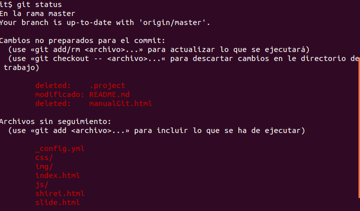

REPOSITORIO
En este apartado se hablará de como crear un repositorio nuevo y hacer una copia local del repositorio.
git init
git init
git clone
git clone /ruta/repositorioSi utilizamos un servidor remoto ejecutaremos:
git clone username@host:/ruta/repositorioAl clonar saldrá un mensaje como este:
CAMBIOS
En este apartado se hablará de como añadir y enviar cambios al repositorio
git status
Primero miraremos los cambios que hemos realizados con el siguiente comando:git statusNos mostrará los cambios no añadidos en rojo y los que necesitan ser añadidos antes de hacer un commit en verde 
git add
Podemos añadir cambios a nuestro repositorio con el siguiente comando:git add nombreArchivo
git commit
Deberemos hacer un commit después de hacer un add con el cual los cambios estarán listos para hacer un push y subirlos al repositorio remoto. Para esto usaremos el comando:git commit -m "mensaje descriptivo"Usaremos un mensaje descriptivo sobre los cambios realizados y obtendremos un mensaje como el siguiente con los cambios:
SINCRONIZAR CAMBIOS
En este apartado se hablará deL envío de cambios al repositorio remoto
git push
Tus cambios están ahora en una zona de tu copia local preparados para ser enviados al repositorio remoto. Para enviar estos cambios ejecuta:git push origin masterReemplaza master por la rama a la que quieres enviar tus cambios. Si no has clonado un repositorio ya existente y quieres conectar tu repositorio local a un repositorio remoto, usa
git remote add origin server
APARTADO3
En este apartado se hablará de X,Y,Z,W...
((((X))))
Github Torradaaaaaa.............................
GitHub torrada larga ..................
((((Y))))
repository ((((Z))))
algo repository torrada....................................................................................................
((((W))))
Github xxxxxxxxxxxxxxxxxxxxxxxxxxx
yyyyyyyyyyyyyyyyyyyyyyyyyyyyyyyyyyyyyyyyyyyyyyyyyyyyyy SSH KEY
zzzzzzzzzzzzzzzzzzzzzzzzzzzzzzzzzzzzzzzzzzzzzzzzzzzzzzzzzzzz SSH KEY
repository Github repository h333333333
algo repository，Github repository remote etcccc
git remote add origin git@github.com:your_account/sandbox.git git push -u origin masteralgooo
git push
Folk h33333333
Fork
torrada............................................................................................................(Collaborators)，algo Clone así:
git clone git@github.com:Username/repository.gitalgo (Collaborators)emmmmmmmmmmmmmmmmmmmmmmmmmm Git algo Clone así：
git clone git://github.com/Username/repository.git
tambien se puede poniendo HTTPS así
git clone https://github.com/Username/repository.git
Pull h3333333333
git pull origin masteralgo git fetch algo branch，algo más branch merge，algo merge commit
Push - Commit h333333
git push origin mastermaster branch explicación
Git h22222222222
Linux kernel
Git Linux Linus Torvalds torrada......................................................................

Linux kernel on Github:
https://github.com/torvalds/linux
h4444444444
Torrada random......................................................
Torrada tocha random.................................................
no ideasomething to click eaaa Github Repository:
https://github.com/g0v